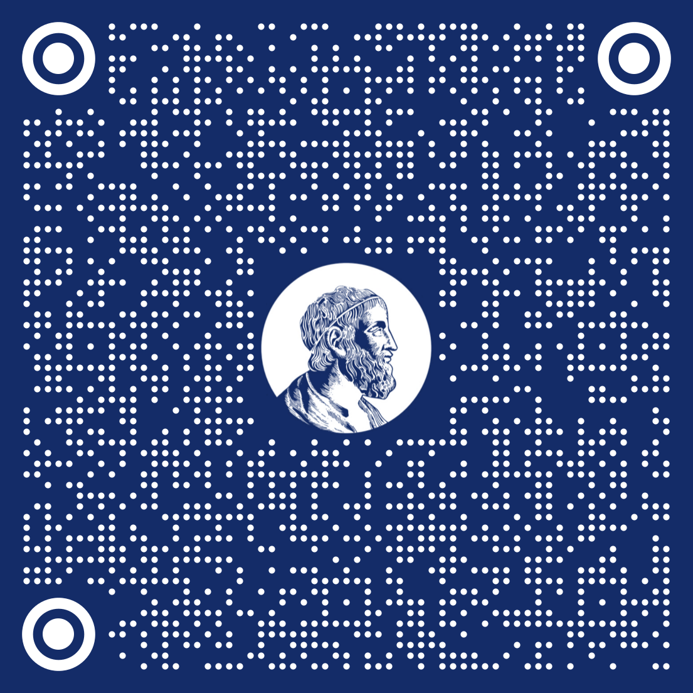
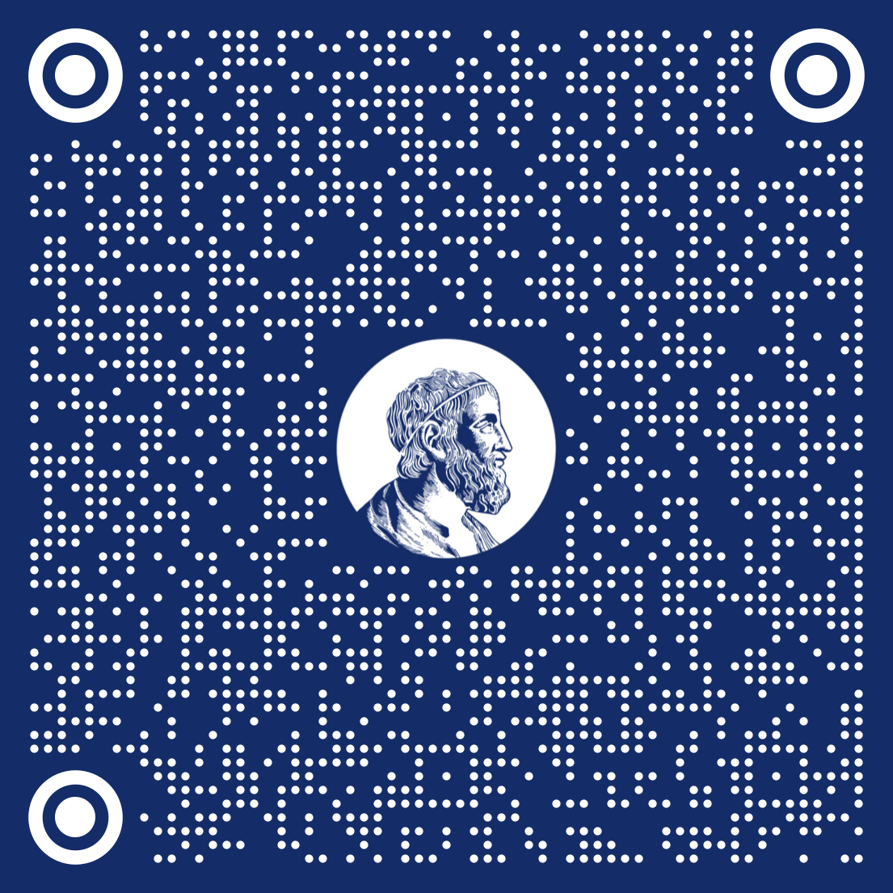

DEFESA DE DOUTORADO
11/08/2022
14:00
A-249
Transmissão online: meet.google.com/pte-eyhm-zom
www.ime.usp.br/defesas
Francisco Felipe de Queiroz
"Análise de dados com suporte limitado: modelos power logit e contribuições à inferência robusta"
Comissão julgadora
Profa. Dra. Silvia Lopes de Paula Ferrari, IME-USP
Prof. Dr. Artur José Lemonte, UFRN
Prof. Dr. Francisco Cribari Neto, UFPE
Prof. Dr. Gilberto Alvarenga Paula, IME-USP
Prof. Dr. Mário de Castro Andrade Filho, UFSCar
Programa de Pós-Graduação em Estatística

DEFESA DE DOUTORADO
19/08/2022
14:00
Online
meet.google.com/xah-ybzm-usw
www.ime.usp.br/defesas
Rodrigo Rey Carvalho
"Propriedades de recobrimento, reflexões em submodelos elementares e partições em espaços topológicos"
Comissão julgadora
Profa. Dra. Lúcia Renato Junqueira, IME-USP
Prof. Dr. Gabriel Zanetti Nunes Fernandes, IME-USP
Prof. Dr. Leandro Fiorini Aurichi, IME-USP
Prof. Dr. Marcelo Dias Passos, UFBA
Prof. Dr. Renan Maneli Mezabarba, ICMC-USP
Prof. Dr. Rodrigo Roque Dias, UFABC
Programa de Pós-Graduação em Matemática

CONCURSO PROFESSOR TITULAR
EDITAL 021/2019 - DEPARTAMENTO DE MATEMÁTICA
Candidatos: Pedro Antonio Salomão e Edson Vargas
Comissão (membros titulares)
Prof. Dr. Roberto Markarian Abrahamian
TITULAR –
IMERL-Uruguai
Prof. Dr. Ruy Exel Filho
TITULAR – Aposentado - UFSC
Prof. Dr. Charles Philippe Louis Tresser
TITULAR – IMPA
Prof. Dr. Daniel Smania Brandão
TITULAR – ICMC-USP
Prof. Dr. Fábio Armando Tal (Presidente)
TITULAR – IME-USP
Comissão (membros suplentes)
Prof. Dr. Mário Jorge Dias Carneiro
TITULAR – Emérito - UFMG
Prof. Dr. Artur Oscar Lopes
TITULAR – UFRJ
Prof. Dr. Carlos Gustavo Tamm de Araújo Moreira
TITULAR – IMPA
Profa. Dra. Maria José Pacífico
TITULAR – UFRJ
Prof. Dr. Paolo Piccione
TITULAR – IME-USP
Prof. Dr. Antonio Luiz Pereira
TITULAR – IME-USP
05/08/2022
08:00
Sala da Congregação
Auditório Gilioli
www.ime.usp.br/concursos